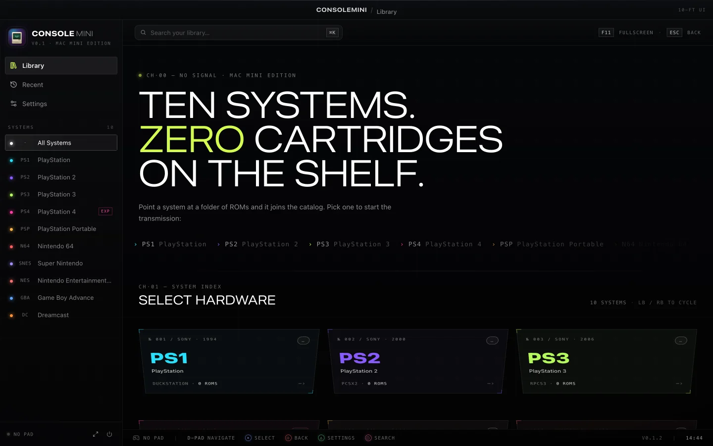
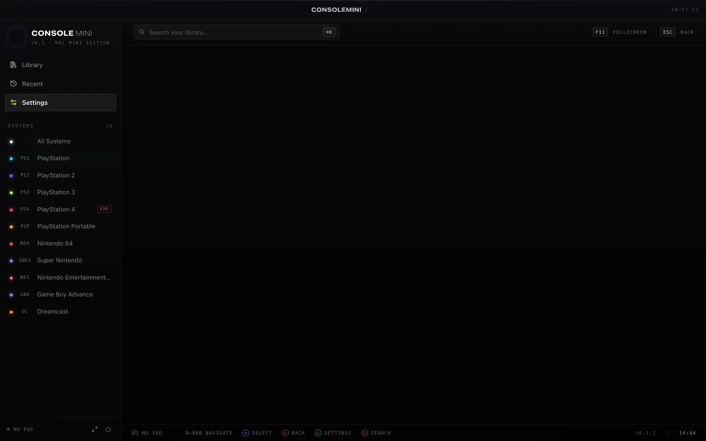

PlayStation
- PS1
- DuckStation
- PS2
- PCSX2
- PS3
- RPCS3
- PS4
- shadPS4 Experimental
- PSP
- PPSSPP
Made for the living room
Browse retro and PlayStation games from the couch, with one controller-first launcher for your Mac.

ConsoleMini opens your games in dedicated emulators. Add your folders, choose a system, and keep the library in reach.
Game compatibility and performance depend on your Mac and the emulator. PS4 support is experimental.
Manage emulator installs and your library from the same app.

Use a compatible DualShock, DualSense, Xbox or 8BitDo controller to browse. Configure in-game controls in each emulator.
Point each system at a ROM folder. ConsoleMini indexes the files and passes the selected game to its emulator.
Settings shows installation status and includes Homebrew installation tools. shadPS4 requires a separate download; RetroArch requires cores.
View emulator save-state folders and reveal them in Finder. Saving and loading remain with the emulator.
Download ConsoleMini
Version 0.1.3. Choose your Mac's processor, then move ConsoleMini to Applications.
Check Apple menu > About This Mac to find your processor. Release notes and checksums
brew install --cask momenbasel/tap/consoleminiOpen Settings to install emulators and add your game folders. Games and BIOS files are supplied by you.
Optional kiosk setupNo. ConsoleMini is a launcher. Supply your own legally obtained games and any BIOS files required by your emulators.
Yes. Separate Intel and Apple Silicon builds are available. Each emulator has its own hardware and macOS requirements, especially for newer systems.
No. ConsoleMini organizes your library and launches an installed emulator. Game compatibility, rendering, in-game input and save states are handled by that emulator.
The repository includes an optional kiosk setup script for launch at login, display sleep settings and Dock visibility. Review the script before running it because it changes system preferences.